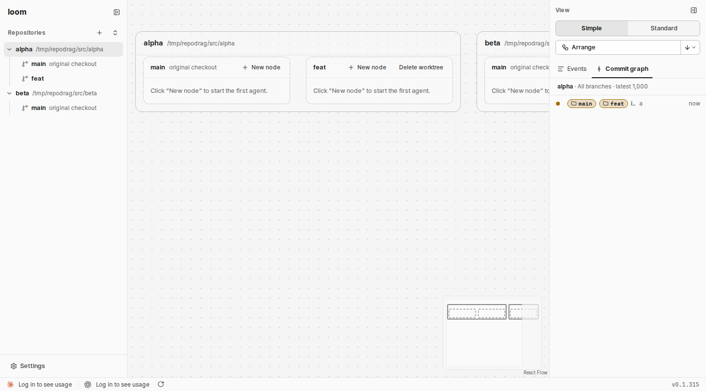

노드 없음
노드 없음
노드 없음
노드 없음
노드 없음
노드 없음
사람 지시 "공간낭비 해결방안 마련하라". 아래 그림은 사람의 loom 그래프(표준 보기)를 시험 데몬에 같은 모양으로 만들고 잰 값을 1/4로 줄여 그렸습니다. main에 노드 하나, 그 자식 노드가 윈도우계정·저장소드래그 묶음에 있고, WSL셸·winget배포·줄바꿈은 빈 묶음입니다. 파란 테두리가 빈 묶음입니다.
fit.width).spanOf)을 모든 단계에서 차지합니다(web/src/layout.ts layoutTree). main은 자식 묶음 둘(1312px)의 가운데에 서고, 오른쪽 뿌리 묶음은 1312px 다음에 섭니다. 그래서 첫 줄에 main 양옆으로 336px씩 빈 곳이 생깁니다.| 항목 | 권장 | 다른 안 |
|---|---|---|
| 사이드바 순서 | 그대로 둡니다. 그래프 순서만 바뀝니다(묶음 끌기와 같음)권장 | 사이드바 저장소 순서도 함께 바꾸고 저장합니다(데몬에 순서 열이 새로 필요) |
| 순서 저장 | 이 페이지를 연 동안만 남깁니다(묶음·카드와 같음)권장 | 브라우저에 저장해 새로고침 뒤에도 남깁니다 |
| 공간 줄이기 | 안 A: 빈 묶음 폭을 내용에 맞추고, 단계별로 붙인다. 부모는 자식들 가운데권장 | 안 B: A에 더해 부모를 첫 자식 왼쪽에 맞춘다(더 좁다, 지금 나무 모양이 바뀐다) |